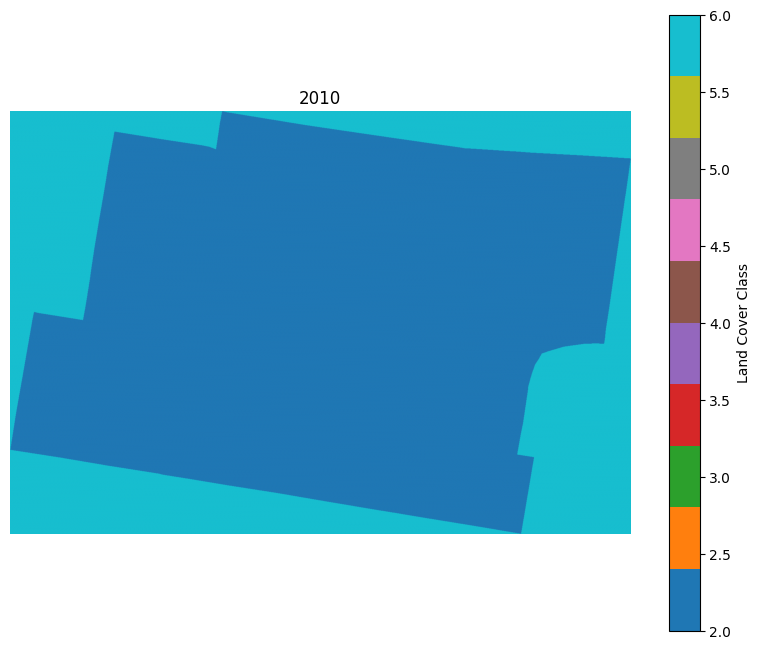

import os, os.path
import rasterio
from rasterio.mask import mask
import geopandas as gpd
import numpy as np
from shapely.geometry import mapping
from rasterio.enums import ResamplingModel Training
Train a machine learning model based on the land use/cover map and NAIP imagery in Philadelphia.
By Luming Xu, May 5, 2025 ## Prepare the dataset for training
Resample the raster data to the same spatial resolution
root = 'C:/Users/19397/Documents/GitHub/MUSA_6950/NationalParks_AI'
# NAIP imagery of Phiadelphia
naipfile = os.path.join(root, 'data/masked_naip_2017_philly.tif')
# Land use/cover map of Philadelphia
lufile = os.path.join(root, 'data/landcover_2018_philly.tif')
# Define file paths, here we resample the lu file with the NAIP imagery
source_raster = lufile # The raster to be resampled
target_raster = naipfile # The reference raster (desired resolution)
output_raster = os.path.join(root, "data/lu_resample.tif") # The output file
# Open the reference raster to get its transform and resolution
ref = rasterio.open(target_raster)
target_transform = ref.transform
target_crs = ref.crs
target_res = ref.res # Resolution (pixel size)
# Open the source raster to resample
src= rasterio.open(source_raster)
# Read source data
src_data = src.read(1) # Read the first band
source_transform = src.transform
# # Define the new transform and size based on the target raster
# new_transform = target_transform
# Update the transform with new resolution but keep the same extent
new_transform = rasterio.transform.Affine(
target_res[0], source_transform.b, source_transform.c,
source_transform.d, -target_res[1], source_transform.f
)
# Compute new raster size (preserve extent, only change resolution)
new_width = int((src.width * src.res[0]) / target_res[0])
new_height = int((src.height * src.res[1]) / target_res[1])
# Perform resampling
resampled_data = src.read(
out_shape=(1, new_height, new_width), # Match target shape
resampling= Resampling.nearest# Resampling.bilinear # Choose resampling method, we
)
## to make sure the resample geotiff also colorful
color_interpretation = src.colorinterp
colormap = src.colormap(1) # Extract color table (only for 1-band rasters)
# Update metadata for the output raster
new_meta = src.meta.copy()
new_meta.update({
"driver": "GTiff",
"height": new_height,
"width": new_width,
"transform": new_transform,
"crs": target_crs, # Match CRS,
"count": 1, # Ensure single band
"compress": 'lzw'
})
# Save the resampled raster
with rasterio.open(output_raster, "w", **new_meta) as dst:
dst.write(resampled_data)
# just to write the color scheme, make sure the output tiff also has color, from chatgpt
dst.colorinterp = color_interpretation
dst.write_colormap(1, colormap) # Apply original colormap
print("Resampling completed successfully!")--------------------------------------------------------------------------- ValueError Traceback (most recent call last) Cell In[2], line 44 42 ## to make sure the resample geotiff also colorful 43 color_interpretation = src.colorinterp ---> 44 colormap = src.colormap(1) # Extract color table (only for 1-band rasters) 46 # Update metadata for the output raster 47 new_meta = src.meta.copy() File rasterio\\_base.pyx:1309, in rasterio._base.DatasetBase.colormap() ValueError: NULL color table
Find the common region of LU and NAIP
from rasterio.coords import BoundingBox
lu_dataset = rasterio.open(os.path.join(root, "data/lu_resample.tif"))
naip_dataset = rasterio.open(naipfile)
naip_bounds = naip_dataset.bounds
lulc_bounds = lu_dataset.bounds
# Find intersection (common area)
common_bounds = BoundingBox(
max(lulc_bounds.left, naip_bounds.left),
max(lulc_bounds.bottom, naip_bounds.bottom),
min(lulc_bounds.right, naip_bounds.right),
min(lulc_bounds.top, naip_bounds.top),
)
print("\nCommon Bounds (Overlapping Area):", common_bounds)
Common Bounds (Overlapping Area): BoundingBox(left=2660575.1551, bottom=204815.7006, right=2750111.1679, top=304939.8064)from rasterio.mask import mask
from pyproj import Transformer
def clip_raster(input_raster, output_raster, common_bounds, reference_crs):
with rasterio.open(input_raster) as src:
# Ensure bounds are in the same CRS
src_crs = src.crs
if src_crs != reference_crs:
aligned_bounds = Transformer.transform_bounds(reference_crs, src_crs,
common_bounds.left, common_bounds.bottom,
common_bounds.right, common_bounds.top)
else:
aligned_bounds = (common_bounds.left, common_bounds.bottom, common_bounds.right, common_bounds.top)
# Preserve color interpretation and colormap (for LU map)
color_interpretation = src.colorinterp
colormap = src.colormap(1) if src.count == 1 else None # Only for single-band rasters
# Convert bounds to a polygon mask
bbox = [{
"type": "Polygon",
"coordinates": [[
[aligned_bounds[0], aligned_bounds[1]],
[aligned_bounds[0], aligned_bounds[3]],
[aligned_bounds[2], aligned_bounds[3]],
[aligned_bounds[2], aligned_bounds[1]],
[aligned_bounds[0], aligned_bounds[1]]
]]
}]
# Clip the raster using mask()
out_image, out_transform = mask(src, bbox, crop=True)
# Update metadata
out_meta = src.meta.copy()
out_meta.update({
"driver": "GTiff",
"height": out_image.shape[1],
"width": out_image.shape[2],
"transform": out_transform,
"compress": "lzw"
})
# Save clipped raster
with rasterio.open(output_raster, "w", **out_meta) as dst:
dst.write(out_image)
dst.colorinterp = color_interpretation # Preserve color interpretation
if colormap:
dst.write_colormap(1, colormap) # Preserve original colormap
print(f"Clipped raster saved as {output_raster} with dimensions: {out_image.shape[2]} x {out_image.shape[1]}")
# Define input raster paths
lulc_path = os.path.join(root, "data/lu_resample.tif")
naip_path = os.path.join(root, 'data/masked_naip_2017_philly.tif')
# Define output paths
clipped_lulc_path = os.path.join(root, 'data/lulc_clipped.tif')
clipped_naip_path = os.path.join(root, 'data/naip_clipped.tif')
# Get reference CRS from NAIP
with rasterio.open(naip_path) as ref:
reference_crs = ref.crs
# Apply clipping to both LU and NAIP
clip_raster(lulc_path, clipped_lulc_path, common_bounds, reference_crs)
clip_raster(naip_path, clipped_naip_path, common_bounds, reference_crs)Clipped raster saved as C:/Users/19397/Documents/GitHub/MUSA_6950/ai-urban-sustainability/lab6-machine-learning/lulc_clipped.tif with dimensions: 27281 x 30507
Clipped raster saved as C:/Users/19397/Documents/GitHub/MUSA_6950/ai-urban-sustainability/lab6-machine-learning/naip_clipped.tif with dimensions: 27280 x 30506# Open NAIP raster
with rasterio.open(clipped_naip_path) as naip:
naip_data = naip.read() # Read all bands
naip_meta = naip.meta # Store metadata
# Open Land Use raster (labels)
with rasterio.open(clipped_lulc_path) as land_use:
land_use_data = land_use.read(1) # Read land use as single-band raster
land_use_meta = land_use.meta
naip_meta, land_use_meta--------------------------------------------------------------------------- NameError Traceback (most recent call last) Cell In[2], line 2 1 # Open NAIP raster ----> 2 with rasterio.open(clipped_naip_path) as naip: 3 naip_data = naip.read() # Read all bands 4 naip_meta = naip.meta # Store metadata NameError: name 'clipped_naip_path' is not defined
Use resample again to erase the 1 pixel difference in the dimension
import rasterio
from rasterio.enums import Resampling
import numpy as np
# File paths
naip_path = clipped_naip_path
land_use_path = clipped_lulc_path
resampled_land_use_path = os.path.join(root, 'data/land_use_resampled.tif')
# Open the NAIP raster (reference)
with rasterio.open(naip_path) as naip:
naip_transform = naip.transform
naip_crs = naip.crs
naip_res = naip.res # Get resolution
naip_width, naip_height = naip.width, naip.height
# Open the Land Use raster
with rasterio.open(land_use_path) as land_use:
land_use_data = land_use.read(1)
# Create an empty array to store resampled land use data
resampled_land_use_data = np.empty((naip_height, naip_width), dtype=land_use_data.dtype)
# Resample land use raster to match NAIP resolution & size
rasterio.warp.reproject(
source=land_use_data,
destination=resampled_land_use_data,
src_transform=land_use.transform,
src_crs=land_use.crs,
dst_transform=naip_transform,
dst_crs=naip_crs,
dst_resolution=naip_res,
resampling=Resampling.nearest # Use nearest-neighbor for categorical data
)
# Update metadata for new raster
new_meta = land_use.meta.copy()
new_meta.update({
"driver": "GTiff",
"height": naip_height,
"width": naip_width,
"compress": "lzw",
"transform": naip_transform,
"crs": naip_crs
})
# Save the resampled land use raster
with rasterio.open(resampled_land_use_path, "w", **new_meta) as dst:
dst.write(resampled_land_use_data, 1)
print("Resampled Land Use raster saved with matching dimensions to NAIP!")Resampled Land Use raster saved with matching dimensions to NAIP!import rasterio
from rasterio.enums import Resampling
import numpy as np
# File paths
clipped_naip_path = os.path.join(root, 'data/masked_naip_2017_philly.tif')
# naip_path = clipped_naip_path
# land_use_path = clipped_lulc_path
resampled_land_use_path = os.path.join(root, 'data/land_use_resampled.tif')
# Open NAIP raster
with rasterio.open(clipped_naip_path) as naip:
naip_data = naip.read() # Read all bands
naip_meta = naip.meta # Store metadata
# Open Land Use raster (labels)
with rasterio.open(resampled_land_use_path) as land_use:
land_use_data = land_use.read(1) # Read land use as single-band raster
land_use_meta = land_use.meta
naip_meta, land_use_meta({'driver': 'GTiff',
'dtype': 'uint8',
'nodata': None,
'width': 27280,
'height': 30506,
'count': 4,
'crs': CRS.from_epsg(2272),
'transform': Affine(3.282111906158346, 0.0, 2660575.1551,
0.0, -3.2821119058545856, 304939.8064)},
{'driver': 'GTiff',
'dtype': 'uint8',
'nodata': 255.0,
'width': 27280,
'height': 30506,
'count': 1,
'crs': CRS.from_epsg(2272),
'transform': Affine(3.282111906158346, 0.0, 2660575.1551,
0.0, -3.2821119058545856, 304939.8064)})1.2 Building the Training Data for scikit-learn
import random
from sklearn.model_selection import train_test_split
# Get unique land use classes (ignoring NoData values like -9999 or 0)
unique_classes = np.unique(land_use_data)
unique_classes = unique_classes[unique_classes > 0] # Remove NoData (0)
# Set the number of pixels per class (adjust for your needs)
samples_per_class = 500 # Reduce further if still too large
# Lists to store sampled data
X_list, y_list = [], []
# Sample pixels for each land use class
for lc in unique_classes:
# Get all pixels of this land use class
rows, cols = np.where(land_use_data == lc)
# Randomly select 'samples_per_class' pixels if available
sample_indices = random.sample(range(len(rows)), min(samples_per_class, len(rows)))
for i in sample_indices:
r, c = rows[i], cols[i]
X_list.append(naip_data[:, r, c]) # Extract NAIP pixel values
y_list.append(lc) # Corresponding land use class
# Convert to NumPy arrays
X = np.array(X_list) # Shape (num_samples, num_bands)
y = np.array(y_list) # Shape (num_samples,)
# Split into training and test sets (70% train, 30% test)
X_train, X_test, y_train, y_test = train_test_split(X, y, test_size=0.3, stratify=y, random_state=42)
print(f"Final dataset size: {len(X_train)} training samples, {len(X_test)} test samples")Final dataset size: 2450 training samples, 1050 test samplesfrom sklearn.model_selection import train_test_split, cross_val_score
from sklearn.svm import SVC
from sklearn.ensemble import RandomForestClassifier
from sklearn.neighbors import KNeighborsClassifier
from sklearn.tree import DecisionTreeClassifier
from sklearn.naive_bayes import GaussianNB
# Define classifiers
models = {
"SVM": SVC(kernel="rbf"),
"Random Forest": RandomForestClassifier(n_estimators=100),
"k-NN": KNeighborsClassifier(),
"Decision Tree": DecisionTreeClassifier(),
"Naïve Bayes": GaussianNB()
}
# Train and evaluate each model
for name, model in models.items():
model.fit(X_train, y_train)
accuracy = model.score(X_test, y_test)
print(f"{name}: Accuracy = {accuracy:.4f}")SVM: Accuracy = 0.5048
Random Forest: Accuracy = 0.4829
k-NN: Accuracy = 0.4895
Decision Tree: Accuracy = 0.4229
Naïve Bayes: Accuracy = 0.4533import joblib
import random
import numpy as np
from sklearn.model_selection import train_test_split, GridSearchCV, cross_val_score
from sklearn.svm import SVC
from sklearn.ensemble import RandomForestClassifier
from sklearn.neighbors import KNeighborsClassifier
from sklearn.tree import DecisionTreeClassifier
from sklearn.naive_bayes import GaussianNB
from sklearn.preprocessing import StandardScaler
from sklearn.feature_selection import SelectKBest, f_classifimport joblib
import random
import numpy as np
from sklearn.model_selection import train_test_split, GridSearchCV, cross_val_score
from sklearn.svm import SVC
from sklearn.ensemble import RandomForestClassifier
from sklearn.neighbors import KNeighborsClassifier
from sklearn.tree import DecisionTreeClassifier
from sklearn.naive_bayes import GaussianNB
from sklearn.preprocessing import StandardScaler
from sklearn.feature_selection import SelectKBest, f_classif
# Get unique land use classes (ignoring NoData values like -9999 or 0)
unique_classes = np.unique(land_use_data)
unique_classes = unique_classes[unique_classes > 0] # Remove NoData (0)
# Set the number of pixels per class (adjust for your needs)
samples_per_class = 500 # Reduce further if still too large
# Lists to store sampled data
X_list, y_list = [], []
# Sample pixels for each land use class
for lc in unique_classes:
# Get all pixels of this land use class
rows, cols = np.where(land_use_data == lc)
# Randomly select 'samples_per_class' pixels if available
sample_indices = random.sample(range(len(rows)), min(samples_per_class, len(rows)))
for i in sample_indices:
r, c = rows[i], cols[i]
X_list.append(naip_data[:, r, c]) # Extract NAIP pixel values
y_list.append(lc) # Corresponding land use class
# Convert to NumPy arrays
X = np.array(X_list) # Shape (num_samples, num_bands)
y = np.array(y_list) # Shape (num_samples,)
# Normalize the pixel values
scaler = StandardScaler()
X = scaler.fit_transform(X)
# Feature Selection (Select top 10 features based on ANOVA F-statistic)
selector = SelectKBest(score_func=f_classif, k=4)
X = selector.fit_transform(X, y)
# Split into training and test sets (70% train, 30% test)
X_train, X_test, y_train, y_test = train_test_split(X, y, test_size=0.3, stratify=y, random_state=42)
# Define classifiers
models = {
"SVM": SVC(kernel="rbf", class_weight="balanced"),
"Random Forest": RandomForestClassifier(n_estimators=100, class_weight="balanced"),
"k-NN": KNeighborsClassifier(weights="distance"),
"Decision Tree": DecisionTreeClassifier(),
"Naïve Bayes": GaussianNB()
}
# Hyperparameter grid for each model (for GridSearchCV)
param_grid = {
"SVM": {"C": [1, 10, 100], "gamma": ["scale", "auto"]},
"Random Forest": {"n_estimators": [50, 100, 200], "max_depth": [None, 10, 20]},
"k-NN": {"n_neighbors": [3, 5, 7], "metric": ["euclidean", "manhattan"]},
"Decision Tree": {"max_depth": [None, 10, 20], "min_samples_split": [2, 10]},
"Naïve Bayes": {"var_smoothing": [1e-9, 1e-8, 1e-7]}
}
# Dictionary to store the accuracy results
accuracy_results = {}
# Train and evaluate each model using GridSearchCV for hyperparameter tuning and cross-validation
for name, model in models.items():
print(f"\nTraining {name}...")
# Hyperparameter tuning with GridSearchCV
grid_search = GridSearchCV(model, param_grid[name], cv=5, n_jobs=-1, scoring="accuracy")
grid_search.fit(X_train, y_train)
print(f"Best Params for {name}: {grid_search.best_params_}")
print(f"Best Accuracy (from GridSearchCV) for {name}: {grid_search.best_score_:.4f}")
# Use the best model from GridSearchCV to make predictions and evaluate
best_model = grid_search.best_estimator_
accuracy = best_model.score(X_test, y_test)
accuracy_results[name] = accuracy
print(f"Accuracy on test set for {name}: {accuracy:.4f}")
# Save the best model for later use
if name == "SVM": # Save the best model (SVM) or any other model you want to use for prediction
joblib.dump(best_model, "C:/Users/19397/Documents/GitHub/MUSA_6950/ai-urban-sustainability/lab6-machine-learning/best_svm_model.pkl")
print(f"Saved the best model as 'best_svm_model.pkl'.")
# Cross-validation scores for the model
cv_scores = cross_val_score(best_model, X_train, y_train, cv=5, scoring="accuracy")
print(f"Cross-validation Accuracy for {name}: {cv_scores.mean():.4f} (+/- {cv_scores.std():.4f})")
# Additional evaluation metrics
from sklearn.metrics import classification_report, confusion_matrix
y_pred = best_model.predict(X_test)
print(f"Classification Report for {name}:")
print(classification_report(y_test, y_pred))
print(f"Confusion Matrix for {name}:")
print(confusion_matrix(y_test, y_pred))
# Display the accuracy results of all models
print("\nModel Accuracy Results:")
for name, accuracy in accuracy_results.items():
print(f"{name}: Accuracy = {accuracy:.4f}")
Training SVM...
Best Params for SVM: {'C': 100, 'gamma': 'scale'}
Best Accuracy (from GridSearchCV) for SVM: 0.5376
Accuracy on test set for SVM: 0.5571
Saved the best model as 'best_svm_model.pkl'.
Cross-validation Accuracy for SVM: 0.5376 (+/- 0.0207)
Classification Report for SVM:
precision recall f1-score support
1 0.59 0.71 0.64 150
2 0.44 0.49 0.47 150
3 0.61 0.34 0.44 150
4 0.86 0.89 0.87 150
5 0.47 0.56 0.51 150
6 0.47 0.63 0.54 150
7 0.50 0.28 0.36 150
accuracy 0.56 1050
macro avg 0.56 0.56 0.55 1050
weighted avg 0.56 0.56 0.55 1050
Confusion Matrix for SVM:
[[106 16 9 4 8 4 3]
[ 43 74 12 0 12 7 2]
[ 9 39 51 1 16 18 16]
[ 3 4 1 133 6 2 1]
[ 7 4 1 3 84 44 7]
[ 6 8 1 7 20 95 13]
[ 6 22 9 7 31 33 42]]
Training Random Forest...
Best Params for Random Forest: {'max_depth': 10, 'n_estimators': 100}
Best Accuracy (from GridSearchCV) for Random Forest: 0.5220
Accuracy on test set for Random Forest: 0.5219
Cross-validation Accuracy for Random Forest: 0.5204 (+/- 0.0122)
Classification Report for Random Forest:
precision recall f1-score support
1 0.55 0.69 0.62 150
2 0.44 0.39 0.41 150
3 0.50 0.31 0.39 150
4 0.87 0.86 0.87 150
5 0.50 0.51 0.51 150
6 0.41 0.64 0.50 150
7 0.38 0.24 0.29 150
accuracy 0.52 1050
macro avg 0.52 0.52 0.51 1050
weighted avg 0.52 0.52 0.51 1050
Confusion Matrix for Random Forest:
[[104 14 11 2 8 7 4]
[ 46 59 21 2 10 9 3]
[ 12 32 47 1 9 26 23]
[ 4 5 0 129 4 6 2]
[ 9 2 2 3 77 47 10]
[ 6 3 3 7 17 96 18]
[ 7 20 10 4 29 44 36]]
Training k-NN...
Best Params for k-NN: {'metric': 'manhattan', 'n_neighbors': 7}
Best Accuracy (from GridSearchCV) for k-NN: 0.5016
Accuracy on test set for k-NN: 0.5124
Cross-validation Accuracy for k-NN: 0.5016 (+/- 0.0081)
Classification Report for k-NN:
precision recall f1-score support
1 0.60 0.63 0.62 150
2 0.45 0.43 0.44 150
3 0.44 0.37 0.41 150
4 0.80 0.88 0.84 150
5 0.49 0.55 0.52 150
6 0.41 0.47 0.44 150
7 0.31 0.25 0.28 150
accuracy 0.51 1050
macro avg 0.50 0.51 0.51 1050
weighted avg 0.50 0.51 0.51 1050
Confusion Matrix for k-NN:
[[ 95 26 10 4 7 6 2]
[ 33 65 28 2 11 6 5]
[ 9 22 56 2 10 23 28]
[ 4 4 0 132 6 1 3]
[ 6 3 5 5 82 32 17]
[ 4 8 7 9 25 71 26]
[ 7 15 20 11 27 33 37]]
Training Decision Tree...
Best Params for Decision Tree: {'max_depth': 10, 'min_samples_split': 10}
Best Accuracy (from GridSearchCV) for Decision Tree: 0.4829
Accuracy on test set for Decision Tree: 0.4933
Cross-validation Accuracy for Decision Tree: 0.4824 (+/- 0.0357)
Classification Report for Decision Tree:
precision recall f1-score support
1 0.62 0.69 0.65 150
2 0.44 0.47 0.46 150
3 0.34 0.23 0.27 150
4 0.86 0.80 0.83 150
5 0.46 0.48 0.47 150
6 0.41 0.55 0.47 150
7 0.28 0.23 0.25 150
accuracy 0.49 1050
macro avg 0.49 0.49 0.49 1050
weighted avg 0.49 0.49 0.49 1050
Confusion Matrix for Decision Tree:
[[104 17 10 2 6 6 5]
[ 35 71 19 3 7 7 8]
[ 11 38 34 2 10 23 32]
[ 2 6 1 120 12 4 5]
[ 6 6 5 3 72 43 15]
[ 4 3 9 4 24 83 23]
[ 7 21 21 6 26 35 34]]
Training Naïve Bayes...
Best Params for Naïve Bayes: {'var_smoothing': 1e-09}
Best Accuracy (from GridSearchCV) for Naïve Bayes: 0.4437
Accuracy on test set for Naïve Bayes: 0.4495
Cross-validation Accuracy for Naïve Bayes: 0.4437 (+/- 0.0139)
Classification Report for Naïve Bayes:
precision recall f1-score support
1 0.49 0.82 0.61 150
2 0.32 0.20 0.25 150
3 0.37 0.23 0.28 150
4 0.58 0.88 0.70 150
5 0.39 0.37 0.38 150
6 0.41 0.61 0.49 150
7 0.38 0.03 0.06 150
accuracy 0.45 1050
macro avg 0.42 0.45 0.40 1050
weighted avg 0.42 0.45 0.40 1050
Confusion Matrix for Naïve Bayes:
[[123 6 4 5 7 5 0]
[ 77 30 17 16 4 6 0]
[ 24 26 34 9 27 25 5]
[ 4 2 0 132 3 9 0]
[ 6 3 4 28 56 52 1]
[ 6 10 3 19 18 92 2]
[ 10 17 30 20 30 38 5]]
Model Accuracy Results:
SVM: Accuracy = 0.5571
Random Forest: Accuracy = 0.5219
k-NN: Accuracy = 0.5124
Decision Tree: Accuracy = 0.4933
Naïve Bayes: Accuracy = 0.4495from sklearn.svm import SVC
# Train an SVM Classifier (RBF Kernel for non-linear decision boundaries)
svm_model = SVC(kernel="rbf", C=10, gamma="scale")
svm_model.fit(X_train, y_train)
# Predict on the test set
y_pred = svm_model.predict(X_test)2 Predicting on the image
from rasterio.plot import show
from rasterio.plot import show_hist
from rasterio.windows import Window
from rasterio.plot import reshape_as_raster, reshape_as_image2.1 Apply the trained model to four tiles of Chicago
# Load the saved model
# best_model_svm = joblib.load("C:/Users/19397/Documents/GitHub/MUSA_6950/ai-urban-sustainability/lab6-machine-learning/best_svm_model.pkl")
# print("Loaded the best SVM model.")
import os
# from sklearn.externals import joblib # Load the trained model
# Define input and output directories
input_dir = "C:/Users/19397/Documents/GitHub/MUSA_6950/ai-urban-sustainability/lab6-machine-learning/CT-naip"
output_dir = "C:/Users/19397/Documents/GitHub/MUSA_6950/ai-urban-sustainability/lab6-machine-learning/CT-classified"
os.makedirs(output_dir, exist_ok=True)
# Load trained classification model (update path to your model file)
# model_path = "path_to_your_trained_model.pkl"
# model = joblib.load(model_path)
# Loop through all TIFF files in the input directory
for filename in os.listdir(input_dir):
if filename.endswith(".tif"):
input_path = os.path.join(input_dir, filename)
output_path = os.path.join(output_dir, f"classified_{filename}")
with rasterio.open(input_path) as src:
img = src.read()
meta = src.meta
reshaped_img = reshape_as_image(img)
# Predict class labels
class_prediction = svm_model.predict(reshaped_img.reshape(-1, img.shape[0]))
class_prediction = class_prediction.reshape(reshaped_img[:, :, 0].shape)
# Update metadata and save classified raster
meta.update(dtype=rasterio.uint8, count=1)
with rasterio.open(output_path, "w", **meta) as dst:
dst.write(class_prediction.astype(rasterio.uint8), 1)
print(f"Processed {filename} and saved to {output_path}")
print("Classification completed for all tiles.")Processed mask2022-naip.tif and saved to C:/Users/19397/Documents/GitHub/MUSA_6950/ai-urban-sustainability/lab6-machine-learning/CT-classified\classified_mask2022-naip.tif
Classification completed for all tiles.2.2 Plot
import rasterio
from matplotlib import pyplot as plt
import numpy as np
mosaic_path = 'C:/Users/19397/Documents/GitHub/MUSA_6950/ai-urban-sustainability/lab6-machine-learning/CT-classified/classified_mask2017-naip.tif'
# Open the raster file
with rasterio.open(mosaic_path) as src:
classified_img = src.read(1) # Read the first (only) band
nodata_value = src.nodata # Check the NoData value, if exists
# Check unique values in the raster (to understand classification)
print(f"Unique values in the classified raster: {np.unique(classified_img)}")
print(f"NoData value: {nodata_value}")
# Handle NoData values (e.g., replace them with a specific value if needed)
if nodata_value is not None:
classified_img[classified_img == nodata_value] = 0 # Replace NoData with 0 or any appropriate value
# Plot the classified raster
# Plot the classified raster
plt.figure(figsize=(10, 8))
plt.imshow(classified_img, cmap="tab10") # 'tab10' provides distinct colors
plt.colorbar(label="Land Cover Class") # Optional colorbar
plt.title("2010")
plt.axis("off") # Hide axis ticks
plt.show()Unique values in the classified raster: [2 6]
NoData value: None
from sklearn.metrics import accuracy_score
from sklearn.metrics import classification_report
# Split data into training and testing sets
X_train, X_test, y_train, y_test = train_test_split(X, y, test_size=0.2, random_state=42, stratify=y)
# Train an SVM Classifier (RBF Kernel for non-linear decision boundaries)
svm_model = SVC(kernel="rbf", C=10, gamma="scale")
svm_model.fit(X_train, y_train)
# Predict on the test set
y_pred = svm_model.predict(X_test)
# Evaluate Model
print("Accuracy:", accuracy_score(y_test, y_pred))
print("Classification Report:\n", classification_report(y_test, y_pred))Compute NDVI
import rio
out_tif = 'C:/Users/19397/Documents/GitHub/MUSA_6950/ai-urban-sustainability/lab6-machine-learning/CT-data/CT-veg.tif'
infolder = 'C:/Users/19397/Documents/GitHub/MUSA_6950/ai-urban-sustainability/lab6-machine-learning/CT-naip'
outfolder = 'C:/Users/19397/Documents/GitHub/MUSA_6950/ai-urban-sustainability/lab6-machine-learning/CT-data'
if not os.path.exists(outfolder):
os.mkdir(outfolder)
for file in os.listdir(infolder):
tiffile = os.path.join(infolder, file)
# read the different bands of the raster data
if not tiffile.endswith('.tif'): continue
naip_dataset = rio.open(tiffile)
green = np.float32(naip_dataset.read(3))
red = np.float32(naip_dataset.read(2))
nir = np.float32(naip_dataset.read(1))
# here add 0.0000001 is to make sure the nir+red is not zero
ndvi = (nir - red)/(nir + red + 0.000001)
# extract the vegetation based on the ndvi
veg = np.zeros((ndvi.shape[0], ndvi.shape[1]), dtype = np.uint16)
veg[ndvi > 0] = 1
# prepare the schema of the new tiles
out_meta = naip_dataset.meta.copy()
# update the schema of the ndvi image, because it is different from teh raw naip image, like only one band
out_meta.update({'count': 1,
'dtype': 'uint16',
"height": ndvi.shape[0],
"width": ndvi.shape[1],
# "transform": out_transform,
"crs": naip_dataset.crs,
'compress': 'lzw'}
)
# this is required, because rio will use three dimension, even this is single band image
veg = veg.reshape(1, veg.shape[0], veg.shape[1])
out_tif = os.path.join(outfolder, file)
with rio.open(out_tif, "w", **out_meta) as dest:
dest.write(veg)
2.3 Visualize the land use map using GIS desktop